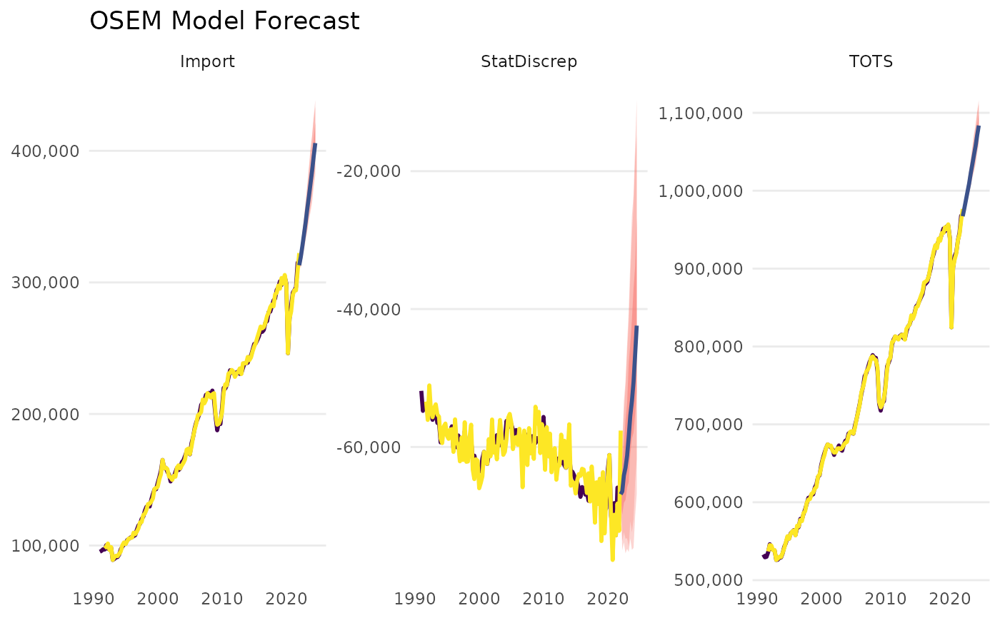
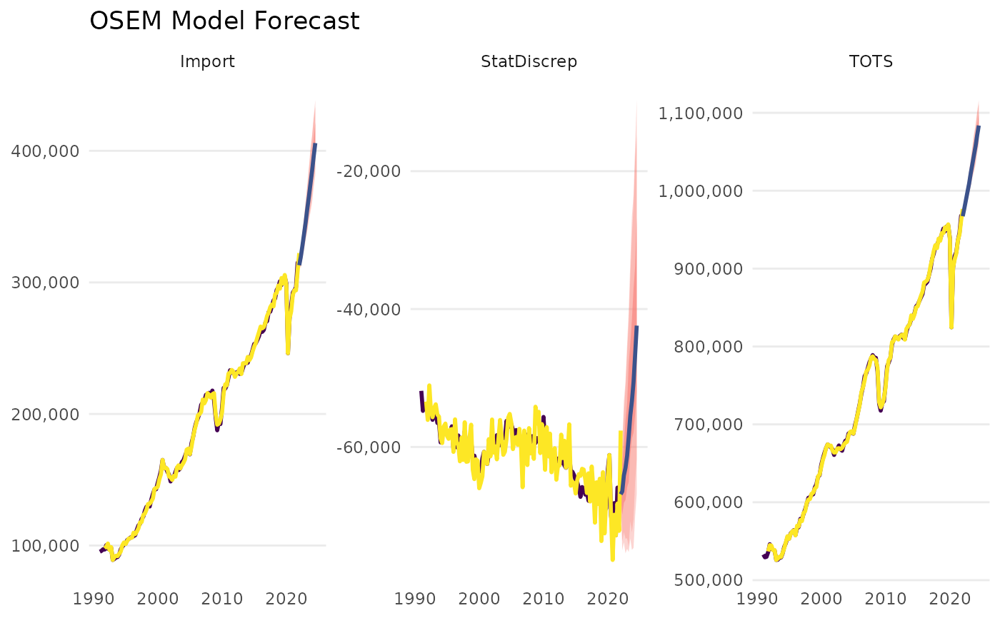

Plot a Forecast Object of the OSEM Model
plot.osem.forecast.RdPlot a Forecast Object of the OSEM Model
Usage
# S3 method for class 'osem.forecast'
plot(
x,
title = "OSEM Model Forecast",
exclude.exogenous = TRUE,
order.as.run = FALSE,
interactive = FALSE,
first_date = NULL,
grepl_variables = NULL,
return.data = FALSE,
linewidth = 1,
...
)Arguments
- x
An object of class osem.forecast, which is the output from the forecast_model function.
- title
Character. Title of the plot. Default is "OSEM Model Forecast".
- exclude.exogenous
Logical. Should exogenous values be plotted? Default is FALSE.
- order.as.run
Logical. Should the plots be arranged in the way that the model was run? Default FALSE.
- interactive
Logical. Should the resulting plot be launched in an interactive way (the plotly package is required for this).
- first_date
Character. First date value to be shown. Must be a character value that can be turned into a date using as.Date() or NULL.
- grepl_variables
Regular Expression Character. Can be used to select variables to be plotted. Experimental feature so use with care.
- return.data
Logical. Do not return a plot but rather just the final dataset that has been created for the plot.
- linewidth
Numeric. Linewidth argument for the plot. Default is 1.
- ...
Additional arguments passed to the plotting function.
Examples
spec <- dplyr::tibble(
type = c(
"d",
"d",
"n"
),
dependent = c(
"StatDiscrep",
"TOTS",
"Import"
),
independent = c(
"TOTS - FinConsExpHH - FinConsExpGov - GCapitalForm - Export",
"GValueAdd + Import",
"FinConsExpHH + GCapitalForm"
)
)
# \donttest{
a <- run_model(specification = spec, dictionary = NULL,
inputdata_directory = NULL, primary_source = "download",
save_to_disk = NULL, present = FALSE)
#> Dataset query already saved in cache_list.json...
#> Reading cache file /tmp/RtmpjfQZ93/eurostat/fbfa4cd9f9acbcb5a36ec302fc7fd87a.rds
#> Table namq_10_a10 read from cache file: /tmp/RtmpjfQZ93/eurostat/fbfa4cd9f9acbcb5a36ec302fc7fd87a.rds
#> Dataset query already saved in cache_list.json...
#> Reading cache file /tmp/RtmpjfQZ93/eurostat/e8eb6e1d8177b066610aff062dea45b1.rds
#> Table namq_10_gdp read from cache file: /tmp/RtmpjfQZ93/eurostat/e8eb6e1d8177b066610aff062dea45b1.rds
#>
#> --- Estimation begins ---
#> Estimating Import = FinConsExpHH + GCapitalForm
#> Constructing TOTS = GValueAdd + Import
#> Constructing StatDiscrep = TOTS - FinConsExpHH - FinConsExpGov - GCapitalForm - Export
 plot(forecast_model(a))
#> No exogenous values provided. Model will forecast the exogenous values with an AR4 process (incl. Q dummies, IIS and SIS w 't.pval = 0.001').
#> Alternative is exog_fill_method = 'last'.

plot(forecast_model(a))
#> No exogenous values provided. Model will forecast the exogenous values with an AR4 process (incl. Q dummies, IIS and SIS w 't.pval = 0.001').
#> Alternative is exog_fill_method = 'last'.


 # }
# }